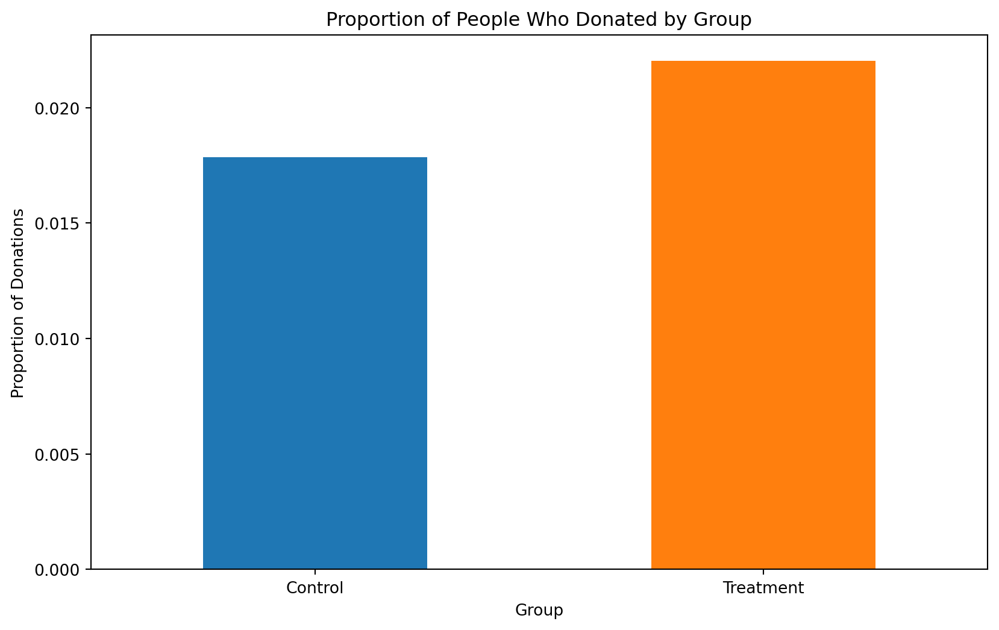

Dean Karlan at Yale and John List at the University of Chicago conducted a field experiment to test the effectiveness of different fundraising letters. They sent out 50,000 fundraising letters to potential donors, randomly assigning each letter to one of three treatments: a standard letter, a matching grant letter, or a challenge grant letter. They published the results of this experiment in the American Economic Review in 2007. The article and supporting data are available from the AEA website and from Innovations for Poverty Action as part of Harvard’s Dataverse.
In this field experiment involving over 50,000 prior donors to a non-profit, the researchers investigate how offering matching grants affects charitable giving. Two-thirds of the sample were placed into a treatment group, receiving solicitation letters highlighting that their donations would be matched by an anonymous donor at various ratios and maximum amounts, while the remaining third, serving as a control group, received standard solicitation materials without mention of a match. The treatment group was further stratified into subgroups, each receiving tailored messaging about the matching ratio, the cap on the matching grant, and suggested donation amounts based on their previous giving history.
The study’s key outcome measures were the response rate to the solicitation and the amount of money donated. By integrating subtle variations in the solicitation letter and the accompanying reply card, the experiment meticulously isolates the influence of the matching grant information. The results offer actionable insights into the effectiveness of different fundraising strategies, revealing the intricate ways in which donors’ decisions are influenced not only by the economic benefit of matching grants but also by their previous engagement levels and the manner in which the opportunity to have their donation matched is communicated.
This project seeks to replicate their results.
Data
Description
The first step in our analysis of the data will be to load and explore the results. Below we bring in the state file and take a quick overview of the variables’ counts, types, and distributions.
Code
# Read the .dta fileimport pandas as pddf = pd.read_stata('karlan_list_2007.dta')# Get an overview of the datadf.info()# Describe the datadata_description = df.describe()print(data_description)
Suggested donation was highest previous contribution
askd2
Suggested donation was 1.25 x highest previous contribution
askd3
Suggested donation was 1.50 x highest previous contribution
ask1
Highest previous contribution (for suggestion)
ask2
1.25 x highest previous contribution (for suggestion)
ask3
1.50 x highest previous contribution (for suggestion)
amount
Dollars given
gave
Gave anything
amountchange
Change in amount given
hpa
Highest previous contribution
ltmedmra
Small prior donor: last gift was less than median $35
freq
Number of prior donations
years
Number of years since initial donation
year5
At least 5 years since initial donation
mrm2
Number of months since last donation
dormant
Already donated in 2005
female
Female
couple
Couple
state50one
State tag: 1 for one observation of each of 50 states; 0 otherwise
nonlit
Nonlitigation
cases
Court cases from state in 2004-5 in which organization was involved
statecnt
Percent of sample from state
stateresponse
Proportion of sample from the state who gave
stateresponset
Proportion of treated sample from the state who gave
stateresponsec
Proportion of control sample from the state who gave
stateresponsetminc
stateresponset - stateresponsec
perbush
State vote share for Bush
close25
State vote share for Bush between 47.5% and 52.5%
red0
Red state
blue0
Blue state
redcty
Red county
bluecty
Blue county
pwhite
Proportion white within zip code
pblack
Proportion black within zip code
page18_39
Proportion age 18-39 within zip code
ave_hh_sz
Average household size within zip code
median_hhincome
Median household income within zip code
powner
Proportion house owner within zip code
psch_atlstba
Proportion who finished college within zip code
pop_propurban
Proportion of population urban within zip code
::::
Balance Test
As an ad hoc test of the randomization mechanism, I provide a series of tests that compare aspects of the treatment and control groups to assess whether they are statistically significantly different from one another.
Direct t-tests and t-tests from linear regression are both statistical tools used to assess the significance of differences between groups or the impact of predictors. A direct t-test compares the means of two independent samples to determine if they come from distributions with equal means, making it ideal for straightforward comparisons between two groups, such as control and treatment conditions in an experiment. The resulting p-value indicates whether any observed difference is likely to be due to chance.
In contrast, a t-test from a linear regression analysis evaluates the significance of individual predictors within a more complex model that may include multiple variables. The t-statistic here assesses whether a coefficient differs significantly from zero, taking into account other factors in the model. This allows for the evaluation of each predictor’s unique contribution and the control of confounding variables. Both types of t-tests rely on the assumption of normally distributed errors and can be adapted for equal or unequal variances between groups. While direct t-tests are best suited for simpler experimental designs, regression t-tests excel in multifaceted studies where multiple influences need to be accounted for simultaneously.
We’ll define functions next that are able to perform both test methodologies on our dataset as needed.
Code
import pandas as pdimport numpy as npimport statsmodels.api as smimport warningswarnings.filterwarnings('ignore')def direct_t_test(df, treatment_col, outcome_col):# Drop any rows with missing values and ensure numeric data for consistency with regression df = df.dropna(subset=[treatment_col, outcome_col]) df[treatment_col] = pd.to_numeric(df[treatment_col], errors='coerce') df[outcome_col] = pd.to_numeric(df[outcome_col], errors='coerce')# Separate the treatment and control groups treatment_group = df[df[treatment_col] ==1][outcome_col] control_group = df[df[treatment_col] ==0][outcome_col]# Calculate means mean_treatment = treatment_group.mean() mean_control = control_group.mean()# Calculate standard deviations std_treatment = treatment_group.std(ddof=1) std_control = control_group.std(ddof=1)# Calculate sample sizes n_treatment =len(treatment_group) n_control =len(control_group)# Calculate separate standard errors se_treatment = std_treatment / np.sqrt(n_treatment) se_control = std_control / np.sqrt(n_control)# Calculate the t-statistic t_stat = (mean_treatment - mean_control) / np.sqrt(se_treatment**2+ se_control**2)# Calculate degrees of freedom using the Welch-Satterthwaite equation df = ((se_treatment**2+ se_control**2)**2/ ((se_treatment**4/ (n_treatment -1)) + (se_control**4/ (n_control -1))))return t_stat, dfdef run_regression(df, treatment_col, outcome_col):# Drop any rows with missing values and ensure numeric data df = df.dropna(subset=[treatment_col, outcome_col]) df[treatment_col] = pd.to_numeric(df[treatment_col], errors='coerce') df[outcome_col] = pd.to_numeric(df[outcome_col], errors='coerce')# Prepare the design matrix X with a constant (intercept) and the treatment indicator X = sm.add_constant(df[treatment_col]) Y = df[outcome_col]# Fit the OLS regression model model = sm.OLS(Y, X).fit()# Extract the t-statistic and p-value for the treatment variable t_stat = model.tvalues[treatment_col]# Return the t-statistic and degrees of freedomreturn t_stat, model.df_resid# Example usage (you need to replace 'your_dataframe', 'treatment', and 'outcome' with your actual DataFrame and column names)# t_stat_direct, df_direct = direct_t_test(your_dataframe, 'treatment', 'outcome')# t_stat_regression, df_regression = run_regression(your_dataframe, 'treatment', 'outcome')# print("Direct t-test:", t_stat_direct, "df:", df_direct)# print("Regression t-test:", t_stat_regression, "df:", df_regression)
Now that the functions are defined, we can test different variables besides the outcome variables to see if the treatment and control groups show significant differences from each other.
Code
# Prepare groups for direct t-test of 'mrm2't_stat_direct, df_direct = direct_t_test(df, 'treatment', 'mrm2')t_stat_regression, df_regression = run_regression(df, 'treatment', 'mrm2')print('Testing the mrm2 variable')print("Direct t-test:", t_stat_direct)print("Regression t-test:", t_stat_regression)# Prepare groups for direct t-test of 'female't_stat_direct, df_direct = direct_t_test(df, 'treatment', 'female')t_stat_regression, df_regression = run_regression(df, 'treatment', 'female')print('Testing the female variable')print("Direct t-test:", t_stat_direct)print("Regression t-test:", t_stat_regression)# Prepare groups for direct t-test of 'red0't_stat_direct, df_direct = direct_t_test(df, 'treatment', 'red0')t_stat_regression, df_regression = run_regression(df, 'treatment', 'red0')print('Testing the red0 variable')print("Direct t-test:", t_stat_direct)print("Regression t-test:", t_stat_regression)# Perform both t-tests of 'years't_stat_direct, df_direct = direct_t_test(df, 'treatment', 'years')t_stat_regression, df_regression = run_regression(df, 'treatment', 'years')print('Testing the years variable')print("Direct t-test:", t_stat_direct)print("Regression t-test:", t_stat_regression)
Testing the mrm2 variable
Direct t-test: 0.11953155228176904
Regression t-test: 0.11949210581591684
Testing the female variable
Direct t-test: -1.7535132542518672
Regression t-test: -1.7583691871450848
Testing the red0 variable
Direct t-test: 1.877281316440582
Regression t-test: 1.8750884882812506
Testing the years variable
Direct t-test: -1.0909175279573782
Regression t-test: -1.1030383745788988
Experimental Results
Charitable Contribution Made
Analyzing whether matched donations lead to an increased response rate of making a donation is a critical first step in reproducing the results of a study because it directly assesses the effectiveness of the matching incentive as a motivational tool in charitable giving. This analysis establishes the foundational evidence needed to validate the underlying assumptions of fundraising strategies that utilize matching offers to enhance donor engagement and generosity. Below we’ll plot the differences in response rate between the treatment and control groups.
Code
import matplotlib.pyplot as plt# Calculate the proportions for the 'gave' column based on the 'treatment' indicatorproportions = df.groupby('treatment')['gave'].mean()# Create a barplotplt.figure(figsize=(10, 6))colors = ['#1f77b4', '#ff7f0e'] # Aesthetically pleasing color paletteproportions.plot(kind='bar', color=colors)# Add labels and titleplt.title('Proportion of People Who Donated by Group')plt.xlabel('Group')plt.ylabel('Proportion of Donations')plt.xticks(ticks=[0, 1], labels=['Control', 'Treatment'], rotation=0) # Rename x-ticks for clarity# Show the plotplt.show()

It appears from a visualization that there is a difference. The treatment group has a slightly higher response rate than does the control group. How sure are we that this effect size is statistically significant rather than due to random chance?
To determine this the next step is to run a t-test between the treatment and control groups on the donation outcome. Using the binary variable ‘gave’. This designates whether a person gave a donation in any amount.
Code
from scipy import stats# Perform both t-tests of 'years't_stat_direct, df_direct = direct_t_test(df, 'treatment', 'gave')t_stat_regression, df_regression = run_regression(df, 'treatment', 'gave')print('Testing the gave variable')print("Direct t-test:", t_stat_direct)print("Regression t-test:", t_stat_regression)# Calculate the p-value for a two-tailed testp_value =2* (1- stats.t.cdf(abs(t_stat_direct), df_direct))print("P-value:", p_value)
Testing the gave variable
Direct t-test: 3.2094621908279835
Regression t-test: 3.101361000543946
P-value: 0.001330982345091547
The above results show stastical values that lead one to believe the difference in response rates between the treatment and control groups are unlikely to have occurred by chance. It indicates that such financial incentives can effectively influence human behavior, enhancing the likelihood of donating or possibly increasing the donation amounts.
Code
import statsmodels.formula.api as smf# Run the probit regression modeldef run_probit_regression(df, formula):# Probit model using the formula interface model = smf.probit(formula, data=df) results = model.fit(disp=0)return results# Use the probit regression functionformula ='gave ~ treatment'probit_results = run_probit_regression(df, formula)# Print out the summary of the regression resultscoefficients = probit_results.paramsp_values = probit_results.pvaluesprint("Treatment Coefficient: ", coefficients[1])print("Treatment P-Value: ", p_values[1])
In the realm of charitable giving, the size of matched donations often plays a pivotal role in incentivizing potential donors. Understanding how different matching ratios influence donor behavior can provide valuable insights for optimizing fundraising strategies. This analysis focuses on evaluating the impact of various match rates—1:1, 2:1, and 3:1—on the likelihood of donations. By employing a series of t-tests, the study seeks to determine if higher match ratios significantly increase the response rate among donors, thereby testing the assumption that more generous matching offers might lead to higher participation rates in donation campaigns.
Below is the code to assess the differences in rates of response between different matching offers presented:
Code
from scipy import stats# Calculate the mean donation rate for each ratio categorymean_ratio1 = df[df['ratio'] ==1]['gave'].mean()mean_ratio2 = df[df['ratio2'] ==1]['gave'].mean()mean_ratio3 = df[df['ratio3'] ==1]['gave'].mean()# Conduct t-testst_test_1_vs_2 = stats.ttest_ind(df[df['ratio'] ==1]['gave'], df[df['ratio2'] ==1]['gave'], equal_var=False)t_test_1_vs_3 = stats.ttest_ind(df[df['ratio'] ==1]['gave'], df[df['ratio3'] ==1]['gave'], equal_var=False)t_test_2_vs_3 = stats.ttest_ind(df[df['ratio2'] ==1]['gave'], df[df['ratio3'] ==1]['gave'], equal_var=False)# Print the resultsprint(f"Mean Donation Rate for 1:1 match: {mean_ratio1:.4f}")print(f"Mean Donation Rate for 2:1 match: {mean_ratio2:.4f}")print(f"Mean Donation Rate for 3:1 match: {mean_ratio3:.4f}")print("T-test Results:")print("1:1 vs 2:1:", t_test_1_vs_2)print("1:1 vs 3:1:", t_test_1_vs_3)print("2:1 vs 3:1:", t_test_2_vs_3)
Mean Donation Rate for 1:1 match: 0.0207
Mean Donation Rate for 2:1 match: 0.0226
Mean Donation Rate for 3:1 match: 0.0227
T-test Results:
1:1 vs 2:1: TtestResult(statistic=-0.965048975142932, pvalue=0.33453078237183076, df=22225.07770983836)
1:1 vs 3:1: TtestResult(statistic=-1.0150174470156275, pvalue=0.31010856527625774, df=22215.0529778684)
2:1 vs 3:1: TtestResult(statistic=-0.05011581369764474, pvalue=0.9600305476940865, df=22260.84918918778)
The results of the t-tests reveal that the increase in match ratios from 1:1 to 2:1 and from 1:1 to 3:1 does not result in a statistically significant increase in donation rates, with p-values of 0.334 and 0.310, respectively. This suggests that while there is a slight increase in mean donation rates from 1:1 to 2:1 and 3:1 matches, these differences are not enough to be considered statistically meaningful. Furthermore, the comparison between the 2:1 and 3:1 match ratios, showing a p-value of 0.960, confirms that there is virtually no difference in donor response between these higher match rates. These findings align with the authors’ comments that neither the match threshold nor the example donation amount notably affects donor behavior. This suggests that while intuitive expectations might lead one to believe that higher match ratios would significantly enhance donation likelihood due to more attractive incentives, the actual impact on donation behavior may be minimal. This could indicate donor insensitivity to incremental increases in match ratios beyond a certain point, challenging the efficacy of escalating match offers as a strategy to significantly boost donation rates.
Next we’ll use regression to look at the comparison of mean response rates for different matching ratios on whether people chose to donate. The coefficient of each variable [ratio1, ratio2, ratio3] can be looked at to determine the effect size between levels of matching presented. The analysis gives us a p-value as well to determine the significance of the movement suggested by the coefficient.
Code
df['ratio1'] = (df['ratio'] ==1).astype(int)# Prepare the design matrix X with a constant and the dummy variables for ratioX = sm.add_constant(df[['ratio1', 'ratio2', 'ratio3']])Y = df['gave']# Fit the OLS regression modelmodel = sm.OLS(Y, X).fit()results = {param: {'Coefficient': model.params[param], 'P-value': model.pvalues[param]}for param in model.params.keys()}# Print out the summary of the regression resultsprint(results)
Interesting. The summary output will be returned to shortly. Next we’ll compare the mean response rates between the matching offers. This will show how much the response rate moves as the offer is increased from 1:1 to 2:1 to 3:1.
Code
mean_ratio1 = df[df['ratio1'] ==1]['gave'].mean()mean_ratio2 = df[df['ratio2'] ==1]['gave'].mean()mean_ratio3 = df[df['ratio3'] ==1]['gave'].mean()# Calculate the differences directly from the datadifference_1_to_2 = mean_ratio2 - mean_ratio1difference_2_to_3 = mean_ratio3 - mean_ratio2print(f"Directly calculated difference in response rate from 1:1 to 2:1 match ratio: {difference_1_to_2:.4f}")print(f"Directly calculated difference in response rate from 2:1 to 3:1 match ratio: {difference_2_to_3:.4f}")
Directly calculated difference in response rate from 1:1 to 2:1 match ratio: 0.0019
Directly calculated difference in response rate from 2:1 to 3:1 match ratio: 0.0001
For housekeeping we should look to see if the model coefficients show a similar movement to the mean comparisons.
Code
coefficients = model.params# Calculate the difference between ratio2 - ratio1 and ratio3 - ratio2difference_ratio2_ratio1 = coefficients['ratio2'] - coefficients['ratio1']difference_ratio3_ratio2 = coefficients['ratio3'] - coefficients['ratio2']difference_ratio2_ratio1, difference_ratio3_ratio2print(f"Coefficient comparison difference in response rate from 1:1 to 2:1 match ratio: {difference_ratio2_ratio1:.4f}")print(f"Coefficient comparison difference in response rate from 2:1 to 3:1 match ratio: {difference_ratio3_ratio2:.4f}")
Coefficient comparison difference in response rate from 1:1 to 2:1 match ratio: 0.0019
Coefficient comparison difference in response rate from 2:1 to 3:1 match ratio: 0.0001
The results of the t-tests reveal that the increase in match ratios from 1:1 to 2:1 and from 1:1 to 3:1 does not result in a statistically significant increase in donation rates, with p-values of 0.334 and 0.310, respectively. This suggests that while there is a slight increase in mean donation rates from 1:1 to 2:1 and 3:1 matches, these differences are not enough to be considered statistically meaningful. Furthermore, the comparison between the 2:1 and 3:1 match ratios, showing a p-value of 0.960, confirms that there is virtually no difference in donor response between these higher match rates. These findings align with the authors’ comments that neither the match threshold nor the example donation amount notably affects donor behavior. This suggests that while intuitive expectations might lead one to believe that higher match ratios would significantly enhance donation likelihood due to more attractive incentives, the actual impact on donation behavior may be minimal. This could indicate donor insensitivity to incremental increases in match ratios beyond a certain point, challenging the efficacy of escalating match offers as a strategy to significantly boost donation rates.
Size of Charitable Contribution
In this subsection, I analyze the effect of the size of matched donation on the size of the charitable contribution. In order to do this we shall run the same t-test only this time we’re using the donation amount relative to the treatment effect.
Code
# Perform both t-tests of 'amount't_stat_direct, df_direct = direct_t_test(df, 'treatment', 'amount')t_stat_regression, df_regression = run_regression(df, 'treatment', 'amount')print('Testing the amount variable')print("Direct t-test:", t_stat_direct)print("Regression t-test:", t_stat_regression)# Calculate the p-value for a two-tailed testp_value =2* (1- stats.t.cdf(abs(t_stat_direct), df_direct))print("P-value:", p_value)
Testing the amount variable
Direct t-test: 1.9182283233541
Regression t-test: 1.860502691500859
P-value: 0.0550899208482003
The analysis suggests that matched donations have a potentially positive, though not statistically significant, impact on donation amounts at the traditional 5% significance level. Given the proximity of the p-value to this threshold, organizations might still consider matched donations as part of a broader, diversified fundraising strategy. Barring additional research, it may yet prove a positive influence on donation amounts.
As a next step we’ll filter the data to only show those who donated something. This can then be compared to the treatment variable to see if treatment has an effect on the amount given that can be teased out of the data.
Code
# Filter to include only rows where a positive donation was madedf_donors = df[df['amount'] >0]# Prepare the design matrix X with a constant and the treatment indicatorX = sm.add_constant(df_donors['treatment'])Y = df_donors['amount']# Fit the OLS regression modelmodel = sm.OLS(Y, X).fit()results = {param: {'Coefficient': model.params[param], 'P-value': model.pvalues[param]}for param in model.params.keys()}# Print out the summary of the regression resultsprint(results)
The coefficient for the treatment variable, which is negative, suggests that being in the treatment group (i.e., offered a matched donation) is associated with a decrease in the donation amount by approximately $1.67 compared to the control group. However, the p-value associated with this coefficient is 0.561, indicating that this effect is not statistically significant.
The regression analysis reveals that, contrary to expectations, the treatment (matched donations) does not lead to an increase in the amount donated. Instead, there’s an indication (though not statistically significant) that it might decrease the amount donated if we are to read the outputs of the regression. All in all, there is not enough information here to say that donation amount specifically is moved by the treatment.
Code
treatment_donated = df_donors[df_donors['treatment'] ==1]control_donated = df_donors[df_donors['treatment'] ==0]# Calculate the mean donation amount for each groupmean_treatment = treatment_donated['amount'].mean()mean_control = control_donated['amount'].mean()# Creating histogramsplt.figure(figsize=(14, 6))# Histogram for treatment groupplt.subplot(1, 2, 1)plt.hist(treatment_donated['amount'], bins=30, color='blue', alpha=0.7)plt.axvline(mean_treatment, color='red', linestyle='dashed', linewidth=3)plt.title('Donation Amounts - Treatment Group')plt.xlabel('Amount ($)')plt.ylabel('Frequency')plt.annotate(f'Mean: ${mean_treatment:.2f}', xy=(mean_treatment, 50), xytext=(mean_treatment +50, 10), arrowprops=dict(facecolor='red', shrink=0.05), horizontalalignment='right')# Histogram for control groupplt.subplot(1, 2, 2)plt.hist(control_donated['amount'], bins=30, color='green', alpha=0.7)plt.axvline(mean_control, color='red', linestyle='dashed', linewidth=3)plt.title('Donation Amounts - Control Group')plt.xlabel('Amount ($)')plt.ylabel('Frequency')plt.annotate(f'Mean: ${mean_control:.2f}', xy=(mean_control, 20), xytext=(mean_control -150, 10), arrowprops=dict(facecolor='red', shrink=0.05), horizontalalignment='left')plt.tight_layout()plt.show()
Simulation Experiment
As a reminder of how the t-statistic “works,” in this section I use simulation to demonstrate the Law of Large Numbers and the Central Limit Theorem.
Suppose the true distribution of respondents who do not get a charitable donation match is Bernoulli with probability p=0.018 that a donation is made.
Further suppose that the true distribution of respondents who do get a charitable donation match of any size is Bernoulli with probability p=0.022 that a donation is made.
Law of Large Numbers
In the provided text, the author outlines an educational simulation designed to illustrate key statistical principles, namely the Law of Large Numbers and the Central Limit Theorem, using a practical example from a charitable donation context. By setting up a scenario where the probabilities of making a donation differ between respondents who receive a match and those who do not, the simulation aims to show how differences in probabilities influence donation behaviors over a large number of trials. Specifically, respondents who do not receive a match have a lower probability (0.018) of donating compared to those who receive a match (0.022).
The code below is structured to generate a substantial number of simulations—10,000 for each group—to model donation outcomes according to the specified Bernoulli distributions. It uses Python’s numpy library to simulate these outcomes, ensuring reproducibility by setting a random seed. Once the donation data for both control (no match) and treatment (match) groups are simulated, the script calculates the cumulative average of the differences in donation probabilities between the two groups across the number of draws. This method allows the plot to visually depict how the average differences evolve as more data points are considered, highlighting the convergence behavior predicted by the Law of Large Numbers.
Code
# Set the true probabilities for control and treatmenttrue_prob_control =0.018true_prob_treatment =0.022# Number of simulations/drawsnum_simulations =10000# Simulate donations for control and treatment groupsnp.random.seed(0) # For reproducibilitycontrol_donations = np.random.binomial(1, true_prob_control, num_simulations)treatment_donations = np.random.binomial(1, true_prob_treatment, num_simulations)# Compute the cumulative average of the differencescumulative_differences = np.cumsum(treatment_donations - control_donations) / np.arange(1, num_simulations +1)# Plot the cumulative averagesplt.figure(figsize=(10, 6))plt.plot(cumulative_differences, color='red', lw=2)plt.axhline(y=true_prob_treatment - true_prob_control, color='blue', lw=1, linestyle='--')plt.xlabel('Number of Draws')plt.ylabel('Cumulative Average Difference')plt.title('Cumulative Average Difference in Donation Rate')plt.show()print("The mean difference is "+str(true_prob_treatment - true_prob_control) +" (the blue hash line).")
The mean difference is 0.004 (the blue hash line).
The plot generated by the code visually confirms the theoretical expectation: as the number of simulations increases, the cumulative average of the differences should approach the true difference in means (0.004) between the control and treatment groups. This is depicted on the plot by the blue dashed line at the level of the true mean difference. The exercise not only reinforces the statistical theory behind sampling distributions and their averages but also provides an intuitive grasp of how small probability differences can be detected and quantified with sufficient data, underlining the practical applications of these concepts in analyzing and interpreting data from real-world experiments. This simulation thereby serves as a powerful tool in both teaching and understanding statistical inference through a direct and engaging approach.
Central Limit Theorem
The Central Limit Theorem (CLT) is a fundamental principle in statistics that plays a pivotal role in the simulation above. It states that, regardless of the distribution of the population, the distribution of the sample means will approximate a normal distribution as the sample size increases, provided the samples are independent and identically distributed with a finite mean and variance. This theorem is crucial because it justifies the use of normal probability theory in the inference about the mean of a population, even when the population itself is not normally distributed.
In this scenario, the Central Limit Theorem comes into play by ensuring that the distribution of the cumulative average differences between the treatment and control groups will approach a normal distribution as the number of draws (i.e., sample size) increases. Each draw represents a Bernoulli trial where a donation is made with a certain probability. As you simulate more trials, the average of these results (due to the law of large numbers) will converge not only towards the true mean difference but also the distribution of these averages will start to resemble a normal distribution (thanks to the CLT).
Code
# Let's generate the histograms for the sample sizes specified and comment on their distribution.# Function to simulate the process and calculate the averagesdef simulate_averages(sample_size, repetitions, p_control, p_treatment): control_means = np.random.binomial(sample_size, p_control, repetitions) / sample_size treatment_means = np.random.binomial(sample_size, p_treatment, repetitions) / sample_sizereturn treatment_means - control_means# Sample sizes to generate histograms forsample_sizes = [50, 200, 500, 1000]# Control and treatment probabilitiesp_control =0.018p_treatment =0.022# Number of repetitions to calculate averagesrepetitions =1000# Set up the plotfig, axes = plt.subplots(2, 2, figsize=(12, 8))axes = axes.flatten()# Generate the histogramsfor i, sample_size inenumerate(sample_sizes):# Simulate the differences in averages avg_differences = simulate_averages(sample_size, repetitions, p_control, p_treatment)# Plot histogram horizontally axes[i].hist(avg_differences, bins=30, orientation='horizontal', color='skyblue', edgecolor='black') mean_value = np.mean(avg_differences) axes[i].axhline(y=mean_value, color='red', linestyle='dashed', linewidth=2)# Annotate the mean difference axes[i].annotate(f'Mean: {mean_value:.4f}', xy=(0.5, mean_value), xytext=(10, 0), textcoords='offset points', fontsize=10, color='red', ha='center', va='bottom')# Set title and labels axes[i].set_title(f'Sample size: {sample_size}') axes[i].set_ylabel('Average Difference') axes[i].set_xlabel('Frequency')# Adjust the layoutplt.tight_layout()plt.show()
For each histogram corresponding to different sample sizes (50, 200, 500, 1000), zero should ideally be within the tails of the distribution if there is no true difference.
Since the true probabilities differ by 0.004 (p_treatment - p_control), zero is not expected to be in the center if the simulation reflects the true difference.
As sample size increases, the distribution of the average differences should become more centered around the true difference (0.004), and the variance should decrease, making the distribution narrower around the mean. Though there is an element of randomness in each sample, we can see that as n increases the peak of the histogram starts to converge around the mean value we know to be 0.004.